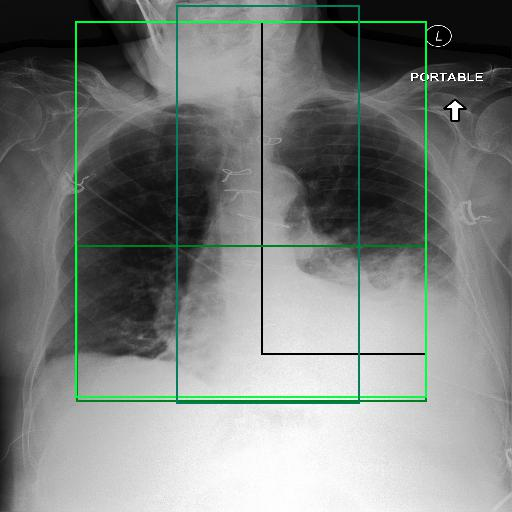

Merge Bbox
right internal jugular dual lumen large bore catheter unchanged in position with the tip in the right atrium. overall cardiac and mediastinal contours are stably enlarged given patient s rotation. lung volumes are diminished. there is perihilar fullness and indistinctness of the pulmonary vasculature which would favor pulmonary edema rather than an acute infectious process. however clinical correlation would be advised as this could reflect an atypical infection. no large effusions. no pneumothorax